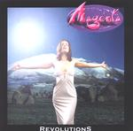

| Artist: | Magenta |
| Title: | Revolutions |
| Label: | F2 Music 200105 |
| Length(s): | 41+55 minutes |
| Year(s) of release: | 2001 |
| Month of review: | [03/2002] |
| Children Of The Sun | 19.00 | |
| 1) | Spirit Of The Land | 4.22 |
| 2) | The Journey | 4.34 |
| 3) | The Battle | 5.02 |
| 4) | Thanksgiving | 5.18 |
| 5) | Opus 1 | 0.54 |
| The White Witch | 20.23 | |
| 6) | Overture | 0.41 |
| 7) | The White Witch | 6.27 |
| 8) | The Plague | 4.17 |
| 9) | Reflection | 4.53 |
| 10) | The Spell | 4.37 |
Disc 2:
| Man The Machine | 24.56 | |
| 1) | Man And Machine | 1.11 |
| 2) | War | 5.34 |
| 3) | Remembrance | 5.00 |
| 4) | The Watchers | 3.53 |
| 5) | Lightspeed | 4.08 |
| 6) | First Contact | 4.54 |
| 7) | Opus 2 | 1.16 |
| Genetesis | 21.48 | |
| 9) | Renewed Purpose | 4.45 |
| 10) | A New Life | 5.01 |
| 11) | The Search For Faith | 5.23 |
| 12) | The Creed | 2.08 |
| 13) | The Warning | 7.17 |
Opus 1 repeats the main theme of the first track on acoustic guitar, to highlight it in case we missed it.
The White Witch I already discussed in the review of the www.progrock.co.uk sampler. This is what I said there.
``After a symphonic beginning, it becomes obvious that Magenta might really be the revelation that the label and a lot of people I know found it to be. The female vocalist is really a good one with a wonderful vibrato. At times she reminds me of Annie Haslam, although she does not sing as high as Haslam does (and uses her voice in a more varied way). This epic has warm keyboards, a strong Cyan feel (not so strange in view of who wrote the music), but it simply comes together better than it does with Cyan. It can't just be the vocalist I think. As it is the music is driven, with keys a la Genesis, vocals like Renaissance, but also some sharp guitar playing, a good combination of nostalgia from the seventies and modern recording qualities. The flute part is Hackett style. A great epic piece.''
On the whole The White Witch makes more of an impression on me than the first epic.
Disc two contains two major epic and one shorter track. Lyrically, all are about revolutions in faith, but on this second disc we are lifted more into the modern world, from the medieval times of the first disc.
Beach Boys go Santa Claus in the opening of Man The Machine, the longest of the epics with almost 25 minutes. The guitar sound is reminiscent of Oldfield at his most vibrant and electric. The vocal part combines Reed and Christina in a slow plodding way. Reed's vocals are quite close to Gabriel's in his old days and in fact this part made me think of Genesis quite a bit. Remembrance is the third part opening with piano and the somewhat melancholy vocals of Christina and dito vocal harmonies. A rather ponderous stately tune with some long stretched, very slow, Floydian guitar. We break into something merry again right in the middle with the Christmas bells returning and an Oldfieldian guitar solo to boot. We move right into part 4 which is more up-beat and on the whole rather accessible with old style Mark Kelly solo's. It is mostly Christina's vocal presentation that gives the music something extra here. The second part of this track is quite moody, after which the music starts a way back to optimism again (the War Is Over feel is back...), but it does not shine as much as it could have.
Lightspeed is part 5 already with indeed a bit more speed, but something is lacking in the groove. It seems that I have heard most of it by now, and the music simply does not bring much new and when the performance let's off a bit... I am reminded of Alan Parsons Project here with a bit of the up-beat Pendragon in there, also in the final keyboards. The final part is First Contact, a rather quirky opening piece, with the piano punctuating the music and some fluting keyboards and vocoded vocals. Piano is quite important on this track notwithstanding the Oldfieldian guitar solo and later mars rhythms.
Opus 2 is another short acoustic tune, after which we come to the final epic, Genetesis. One might be tempted to think this is a Genesis inspired track, but not really, because this is a Yes inspired tune. The guitar playing in the opening part for instance is typical for Howe, but the staccato sung vocals are also in this line (discounting the opening vocals which are more melodic). The Yes influence stays also in the next track, although the keyboards continue to be more in the eighties vein. Also, the male vocal interjections are typically Jon Anderson (but a bit lower). The vocals of Christina transcend the Yes influence, but she does fit in well. Time for a bit more rock here with organs, and dancing keyboards against a long guitar solo.
A New Life is somewhat percussive with dancing keyboards and strongly Yes like guitar work. Plenty of variation in The Search For Faith, plenty of drive and breaks as well. The second part is quite percussive again with a groovy organ solo (think Santana here). The painic conclusion points to Camel's Rain Dances. The Creed is the majestic closer in Yes vocals harmony style.
The final track is The Warning opening with acoustic guitar. This is a vocal dominated track with the clear vocals of Christina and Robert Reed doing mostly backing. Tony Banks is the main reference on keyboards/piano, the guitar solo is a long, slow, forceful one. We end with friendly acoustic guitar.